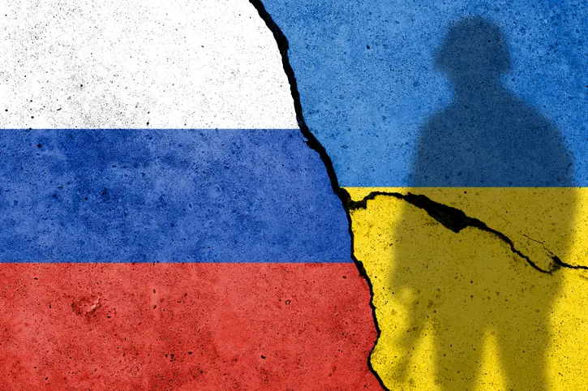

Conflito entre Ucrânia e Rússia continua impactando o mundo
Guerra provoca crise humanitária, tensões internacionais e mudanças econômicas globais

O conflito entre Ucrânia e Rússia, iniciado em fevereiro de 2022, segue causando grandes impactos na Europa e no restante do mundo. Milhares de pessoas foram deslocadas, cidades foram destruídas e a crise humanitária se agrava a cada dia.
Diversos países impuseram sanções econômicas à Rússia, enquanto a Ucrânia recebe apoio humanitário e militar de nações ocidentais. As negociações de paz ainda não avançaram de forma significativa, e os combates continuam em várias regiões do território ucraniano.
O conflito também afeta a economia global, especialmente nos setores de energia e alimentos, já que Rússia e Ucrânia são grandes exportadores de gás, petróleo e grãos. Organizações internacionais seguem buscando soluções diplomáticas para encerrar a guerra e minimizar os danos à população civil.
Nos últimos meses, a intensificação dos ataques em áreas urbanas elevou o número de vítimas civis e aumentou a pressão sobre os sistemas de saúde e infraestrutura das cidades atingidas. Hospitais relatam falta de medicamentos e equipamentos, enquanto voluntários e ONGs tentam suprir as necessidades básicas da população.
Além do impacto direto sobre a população, o conflito tem provocado uma onda de refugiados em direção a países vizinhos, como Polônia, Romênia e Hungria. Estima-se que mais de 8 milhões de ucranianos tenham deixado suas casas desde o início da guerra, buscando abrigo em outras regiões ou no exterior.
No cenário internacional, líderes mundiais continuam debatendo possíveis soluções para o impasse. Enquanto alguns defendem o aumento das sanções e do apoio militar à Ucrânia, outros alertam para o risco de escalada do conflito e defendem o diálogo como caminho para a paz.
A guerra também trouxe consequências econômicas globais. O aumento dos preços do petróleo e do gás natural, aliado à escassez de grãos e fertilizantes, tem pressionado a inflação em diversos países e afetado a segurança alimentar em regiões mais vulneráveis.
Apesar dos esforços diplomáticos, ainda não há previsão para o fim do conflito. Especialistas alertam que a reconstrução das áreas afetadas exigirá anos de trabalho e cooperação internacional, além de um compromisso duradouro com a paz e a estabilidade na região.
Por Helloysa, Rodrigo, Thiago e Yago | 20 de maio de 2025